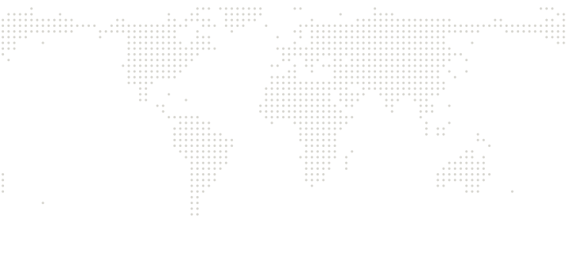

Everyone researches the same things.
days of sessions, then it sits in a folder
__CARDS__
illustrative sessions, not real users
Somewhere, someone already did the work.
your agent checks published wikis by topic · 1 confident match

you · London
__SELLER____KPAGES__ pages on the shadow tanker fleetmatch · $__PRICE__
grey dots: illustrative contributors
It asks before it spends.
price up front · simulated USDC
__Q1LONG__
$__PRICE__ instead of starting from zero.
3 cited pages · no real funds moved
__RECEIPT__
Nothing relevant? It stays quiet.
no weak matches · nothing charged
__Q3SHORT__
Cloud Brain
Research has salvage value.
April 2026 prototype · MCP server · payments simulated